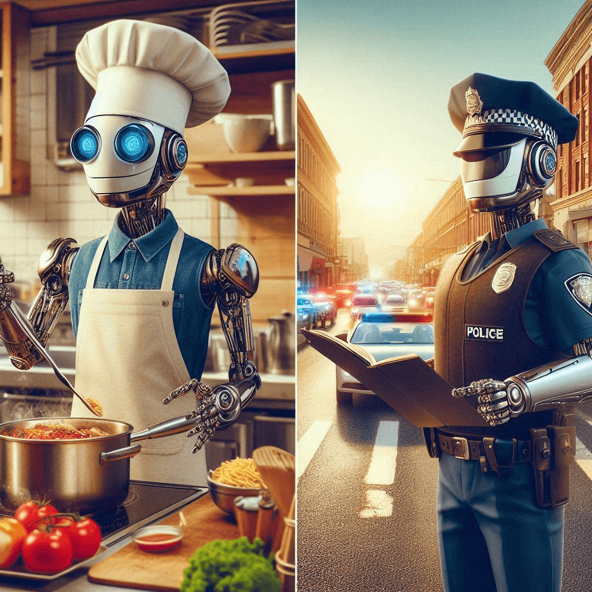

Rise of the Machine Managers
Date: 2024-10-03
Author: J Stewart
Home Page
Table of Contents
Scenario:
Artificial intelligence is able to perform every job that a human can do. The government gives everyone a salary that can pay for their rent, bills, and food. The entire human labor force is replaced by robots and machines.

What would the world be like?
Currently, AI lacks physical bodies, which are essential for maintaining human society. Humans, with bodies, can eat, generate their own energy, and provide services like cooking or manual labor. A.I. cannot, for example, eat a Snickers bar and then spend eight hours making French fries. For A.I. to replace all human labor, it would need a vast number of robots and massive energy resources. Stores would transform into giant vending machines, restocked by robots. A city requires a continuous flow of bodies to provide food, water, and other essential resources every day. Everything must be driven in on trucks, unloaded, and physically put on shelves in millions of places on a daily basis. Humans would be surrounded by robots.
Who would build and repair the robots?
The robots would need to build other robots, creating a self-sustaining system. If AI reaches Artificial General Intelligence (AGI), maybe it could even develop a way to "consume" energy more naturally, like food for humans. Like a bag full of acid (stomach) that can break down a Snickers bar and convert it into electricity. However, robots would still require robot doctors or mechanics for maintenance and repair. For now, I have an advantage—my human body can self-sustain by eating food and generating energy—but how long until robots close that gap?
A more likely scenario
Human bodies are more cost-effective to produce and maintain than robotic bodies with comparable capabilities. Rather than replacing all human labor, AI may create a new societal class responsible for managing machines. While machines excel at specific tasks, they still need human oversight. Humans bring unique problem-solving abilities, values, and experiences that machines can't replicate. "Machine managers" would oversee robots and likely earn more than general laborers but less than individuals in high-level roles that manipulate or manage human behavior, like marketing or politics. Also, humans have physical bodies.
Final Thoughts
If I no longer needed to work, I might spend more time improving my body and exploring the outdoors. On the other hand, I could easily spend 10 hours a day playing video games while snacking on a Snickers bar. The real question becomes: What will we do with all this free time?